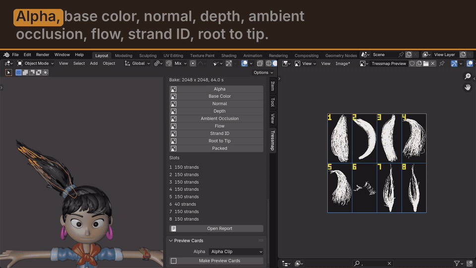
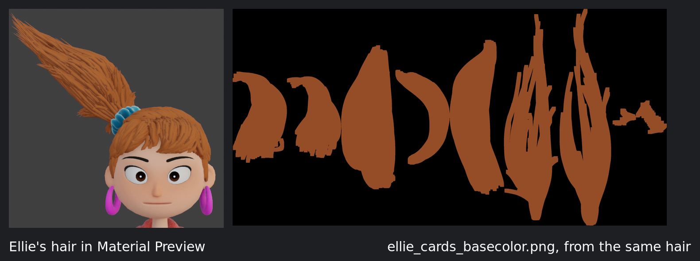
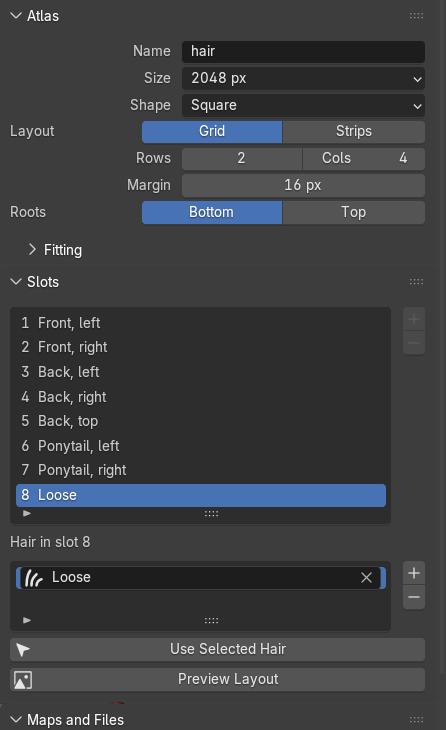
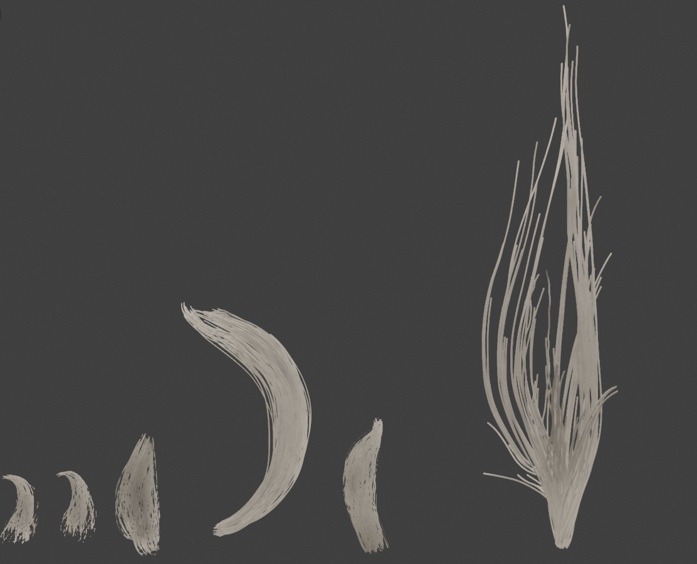

Tressmap for Blender
Need the hair-card textures and don't want to leave Blender for them? Tressmap bakes normal, depth, ambient occlusion, flow, strand ID, alpha, root-to-tip and base color maps from the hair curves you groomed, into one atlas at the size you choose.
$19 once, source included. Buy for $19

Real Blender 4.5.16 window, two crops. Credits
- Eight maps in one press, from your own hair curves.
- The size your engine wants, 512 to 8192 px, padded and packed.
- See it before you bake; redo one clump alone.
$19, one-time, source included (GPL-3.0-or-later). Every update included.
Blender 4.2 LTS to 5.3, tested on 4.2.23, 4.5.16, 5.2.4 and 5.3.0 (Linux) · source included · support@ochrestack.com · Polar checkout · 14-day refund if it doesn't work as described and we can't fix it · no license check · every update is a new zip, sent when you ask · details
Watch it work

Ellie's particle hair, converted with Convert to Curves and cut into eight locks with Separate, one lock per slot.






Tressmap makes the textures. It does not groom hair, make cards on a head or write your engine's hair shader.
Before you bake: your hair and its material
- Particle hair: in Particle properties, open the menu beside the list and choose Convert to Curves, once for each system. The new object has no material and becomes the active one, so select your head again before the next.
- Give each new object your hair material (Material properties, Browse Material), or its base color bakes grey.
- One slot is one flat clump. Blender 4.5 and later can cut a whole groom into clumps with Separate; 4.2 LTS cannot, so keep one particle system for each clump.
Principled Hair in Melanin mode has no color to read: set the material's Viewport Display color to your hair color first.
On Blender 4.2 LTS the route ends like this. Two of Ellie's particle systems were converted with Convert to Curves and baked as they are, one slot each; the Result panel lists two notes (the picture):
- Slot 1: the hair is as deep as it is long, so it is not one flat clump and the card shows a view from the front. Use one hair object per clump.
- Base color of Front and Ponytail is grey: they have no material.
Details
- Secure checkout by Polar; the download comes after payment and includes the full source.
- If it doesn't work as described and we can't fix it, email us within 14 days of purchase for a full refund (terms).
- A studio of up to 10 artists pays $57: support@ochrestack.com.
- Tested on Linux in Blender 4.2.23 LTS, 4.5.16 LTS, 5.2.4 LTS and 5.3.0.
- Windows and macOS were not tested, and neither were Unity or Unreal.
- An update is a new zip, installed the same way. The add-on makes no network calls, so it never checks for one; write to support@ochrestack.com for the latest zip.
- GPL-3.0-or-later. No telemetry, no analytics. Limits and how we tested.
Install and your first bake: quick start. The full manual is inside the zip.
Character: Ellie Rig (CC) Blender Foundation | studio.blender.org, Sprite Fright, used under CC BY 4.0. Her particle hair was converted to hair curves and cut into locks; her mesh hair is hidden in the viewport. Ellie is not included with Tressmap.
$19 once, source included · Polar checkout · 14-day refund if it doesn't work as described and we can't fix it · Blender 4.2 LTS to 5.3, tested on 4.2.23, 4.5.16, 5.2.4 and 5.3.0 (Linux)